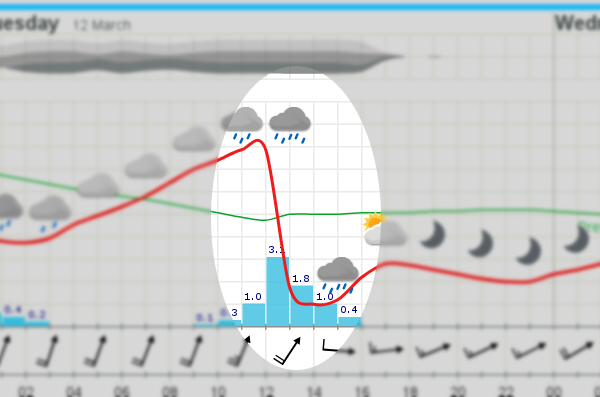
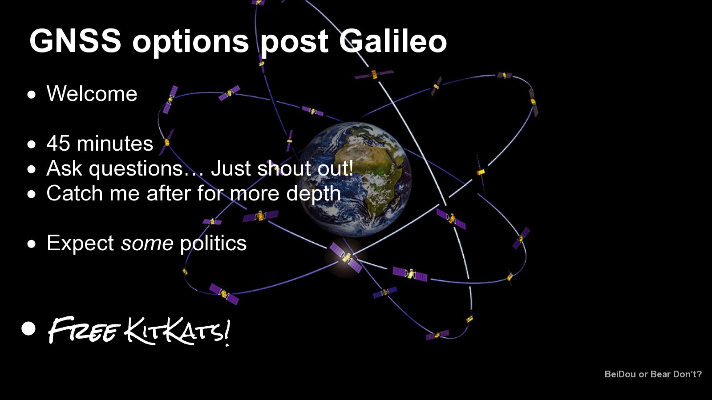
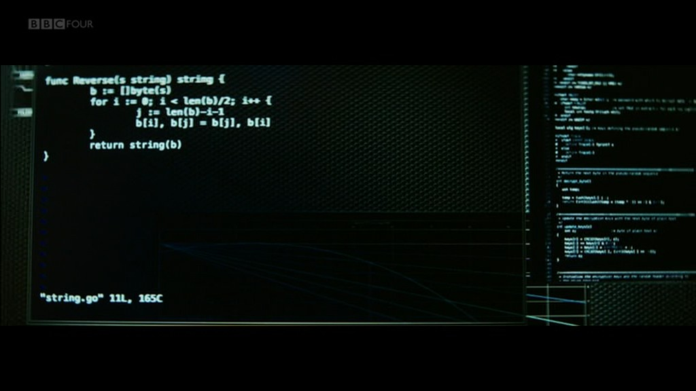

In reply to @dan_man@eads_rpas's post
on
Aug 12, 20:02 :
@JNRowe@eads_cs hmm, maybe I'm interviewing too much but the first couple are common interview questions reworded.@dan_man@eads_rpas I’m sure I’ve heard a few on WbU or Odds & Evenings too; doesn’t mean there isn’t more fun to be had ;)
Aug 12, 23:33
Late to the party, but the Newton Institute are running a fun series of puzzles over August. Hit me up in the cafeteria/train to discuss
Aug 12, 19:02
In reply to @MissLB@eads_cs's post
on
Aug 06, 11:52 :
@JNRowe@eads_cs Jeez, that "brexit mess" op-ed linked in the obit is A-M-A-Z-I-N-G. Imagine if you could get away with that at work?@MissLB@eads_cs … or in life at large? “you can’t reason your way out” aso, but believing will fix that
Aug 07, 12:59
OH: “Given Booker is dead, who is the new go-to example for ∞ denial?” Arguably harsh as a statement, but feels like a valid question.
Aug 05, 15:58
In reply to @MissLB@eads_cs's post
on
Jul 23, 19:34 :
@JNRowe@eads_cs dude, twelve hours to go and you're looking for recipes... I mean, yeah, count me in... but P is for Preparation@MissLB@eads_cs I was looking for the traditional names of the alternative types; veggie one, halal one, etc. Appreciate the confidence.
Jul 24, 20:06
In reply to @charoug@eads_cs's post
on
Jul 23, 19:19 :
@JNRowe@eads_cs yum, is that for tomorrow? I'll take a kosher one 😜 How many will be there?@charoug@eads_cs Actually, yes. I’ve planned for ~fifteen, but we’ll see what happens. Drop in to AW1, if you miss breakfast.
Jul 23, 19:27
”Cheat’s eggs Benedict”, where the apparent cheat is “6 tbsp hollandaise sauce”. Worst. Recipe. Ever.
Jul 23, 19:01
Have been priming a reboot of bfm this evening, mostly to please everyone's favourite child(but also me). /cc @cass@eads_cs .
Jul 18, 22:32
In reply to @chewy@eads_cs's post
on
Jul 01, 18:28 :
@JNRowe@eads_cs I think that is a joke, right? If not what are you suggesting, that we simply give up or ...@chewy@eads_cs Well, offers of elucidation to people who think opinions are equally valid are almost by definition worthless.
Jul 01, 19:01
In reply to @chewy@eads_cs's post
on
Jul 01, 14:52 :
Interesting talk about a "kite mark" for science reports at BLiM. Obvious flaw being funding a body to do so.
@chewy@eads_cs Or try listening to a climate denialist. “Science is wrong. World got warmer before, science proved it!”
Jul 01, 18:12
In reply to @chewy@eads_cs's post
on
Jul 01, 14:52 :
Interesting talk about a "kite mark" for science reports at BLiM. Obvious flaw being funding a body to do so.
@chewy@eads_cs Obvious flaw is surely more likely to be people. Fex if people are hearing “MMR terror” today, reputable sources don’t help
Jul 01, 18:12
I’m giving a talk on quickcheck-type solutions for imperative languages at LoFu ‘19. Drop in to whine about people needing “real FP”.
Apr 21, 06:07
In reply to @charoug@eads_cs's post
on
Mar 13, 17:41 :
@JNRowe@eads_cs Indexing is really tight now, big thanks! Will you be about to take a look again when the stretch sets in?@charoug@eads_cs Those cables are supposedly pre-stretched, so it shouldn’t be a problem. That said, yes… but SMS is best method now.
Mar 14, 06:17
I’m on sabbatical from tomorrow, and largely out of reach. SMS → FOAF link → personal phone number → maybe email → shout at clouds.
Mar 12, 22:43
@xander@eads_cs Post those toolbox articles to mastodon or at least an Atom feed somewhere. Really awesome, want to subscribe.
Mar 11, 05:38

Checking yr.no for week’s cycling clothes choice, found omen instead. Wasn’t that how that 2004 palaeoclimatology documentary started?
Mar 11, 05:37
In reply to @MissLB@eads_cs's post
on
Mar 07, 18:50 :
New year cycling experiment is broken. I don't like the dark nights without even a moon on commute. Back to roads or car?
@MissLB@eads_cs Thing is I really miss those; both new and full. Are you wearing appropriate lenses? Huge difference.
Mar 07, 20:06
In reply to @MissLB@eads_cs's post
on
Feb 24, 22:02 :
Loving Endeavour, even if the "bad" coppers feel a little pantomime villainous. Slow but thoughtful, plodding yet melodic.
@MissLB@eads_cs Prime Suspect ‘73 was my fave origin story, but Endeavour sure is nice Sunday night decomp. Agree on rhythm.
Feb 25, 05:17
In reply to @charoug@eads_cs's post
on
Feb 24, 17:45 :
Peeps, who can set(or help set) my '08 Shimano indexing? Re-cabled, now stuck. Seems to catch half cogs on outer ring
@charoug@eads_cs A stand really helps, you can borrow mine. If it is rideable bring it GWR2 on Tuesday, and I’ll have a pop.
Feb 25, 05:15
In reply to @ollie@eads_cs's post
on
Feb 20, 15:25 :
@JNRowe@eads_cs @xander@eads_cs I thought you’d been saying no too 😠 You didn’t mention that when I asked about Paris@ollie@eads_cs Thought you knew. In fact, I thought that was the exact conversation we had back in July.
Feb 20, 14:25
In reply to @xander@eads_cs's post
on
Feb 20, 14:05 :
@JNRowe@eads_cs Jeez, didn't know that. How come industry doesn't count? Had assumed you'd been saying no to that and {P,T}@xander@eads_cs It doesn’t here either. Nope, would’ve gone to any in an instant & even looked at SR roles in 2016-12.
Feb 20, 14:22
In reply to @blaze@eads_cs's post
on
Feb 20, 13:50 :
@JNRowe@eads_cs Disinterested parties? Unexpected kindness. Were you not offered Bremen? My heartfelt sympathies if not.@blaze@eads_cs Can’t be offered, I obviously don’t meet the minimum 4Y masters requirement. Sadly, my final ERB project :/
Feb 20, 13:59
Just finished my GGS probit. Not sure what management expected, presume it is “no change required; disinterested parties killed it”.
Feb 20, 13:48
In reply to @pmitty@eads_cs's post
on
Feb 12, 09:33 :
@JNRowe@eads_cs ick, problem is one of our upstreams uses poetry via pendulum. I was just looking to package it. What next?@pmitty@eads_cs Ping me on the PR and I’ll port it to something else. Note: I’m offering to do the work, we’ll fix it.
Feb 12, 10:19
If you’re thinking about using Python’s poetry mod[hi, Paul!], be aware it breaks all reproducible builds and creates a packaging nightmare.
Feb 11, 17:13
In reply to @chewy@eads_cs's post
on
Feb 07, 12:45 :
People, how do you store chromium configs in home VC? It is just a horrific mess of JSON dumps with awful whitespace and sorting.
@chewy@eads_cs سلام, Becky. sqlite3 .dump and js -S . are your friends; use tools to recreate valuable hunks, and ignore rest.
Feb 08, 13:52
Here, it is common to see lengths quoted at 20℃ … Is it localised in other climates? (Or how to search away my ignorance?)
Jan 23, 14:14
In reply to @mickey@eads_cs's post
on
Jan 10, 22:09 :
@JNRowe@eads_cs I get the point, but what is the alternative? We’ve proved we can’t do better, nobody pays for correct.@mickey@eads_cs I see no alternative, wishful thinking won’t get us anywhere. In agreement; nihilism wins, we lose.
Jan 15, 06:12
In reply to @mickey@eads_cs's post
on
Jan 10, 22:09 :
@JNRowe@eads_cs I get the point, but what is the alternative? We’ve proved we can’t do better, nobody pays for correct.@mickey@eads_cs I meant “still” in the “catching up with old problems” sense, but…
Jan 15, 06:12
As someone who still has to fix rollover bugs(‘16 1-byte “fix”, GPS 10-bit in April) Y2038 felt distant, not now.
Jan 10, 11:02
Catching a “Tea Peter” re-run tonight is a far different experience to its original airing in 2012, cf Jacob Workingman.
Jan 02, 21:36
Making an attempt at /office-hours, we’ll see how it pans out. I encourage you to try the same.
Dec 2018
In reply to
my post
on
Nov 2018 :
I’ve retired from our #aoc 2018 competition, who will steal my fourth place on our leaderboard?
Dec 2018
TFW you embark on a new project. Distilled in to too many words. /cc co-workers what changes do you want to see?
Dec 2018
#aoc 2018 is almost upon us :) Questioning whether to get up an hour early tomorrow, we'll see…
Nov 2018
Very smart looking project hosting.@blaze@eads_cs
Nov 2018
In reply to
my post
on
Nov 2018 :
… wherein the Charlie character(Florence Pugh) is great, and the others would be improved as puppets.
Nov 2018
Timeline is full of people recommending “Little Drummer Girl”; iPlayer catchup of 1º ep reveals it is “Team America” as a period drama
Nov 2018
@dev_b@eads_cs Remembering it is Diwali is not the same when Milly isn’t around to send me laddu. Hope you’re enjoying it nonetheless.
Nov 2018
In reply to
my post
on
Oct 2018 :
And I guess bonus points for using set stal=0. Probably easy to get lost though.
Oct 2018
So… there is a use for tabs in #vim . Mimic zoom in/out without plugin hackery. tabedit % in, then <C-w>c out.
Oct 2018
GNU ’s take on a CoC -alike is really quite interesting, and looks useful in general. Perhaps we should replace ours by a link?
Oct 2018
In reply to @Kat@eads_cs's post
on
Oct 2018 :
@JNRowe@eads_cs Text is good, but what does the tiling layout look like? Give a talk at hackday for us newbs?@Kat@eads_cs Added an image, HTH . I’ve been thinking about an #awesomewm talk for a little while now, so maybe…
Oct 2018
In reply to @leon@gwr's post
on
Oct 2018 :
@JNRowe@eads_cs DaveJ linked me to the CamTech network, and they push down to Hertford. All pre-screened recruiters.@leon@gwr Thanks, that’ll help. Can’t believe how slimy some of the “top” companies seemed on a cold call.
Oct 2018
In reply to @MissLB@eads_cs's post
on
Oct 2018 :
@JNRowe@eads_cs BAE Tony hooked up hubby, and sister-in-law with connects. Good people, knew env and area@MissLB@eads_cs Ah, good call. For ref: OoB Mickey suggested the BTC meet up, and they got back to me immediately.
Oct 2018
So, how do folks go about finding a good recruitment consultant? First time in fifteen years, and it looks full lemon.
Oct 2018
Playing around with GitHub issue replies for @Nathan@eads_cs
Oct 2018
Friend tells story of co-worker who explains everything in story form using ST:TNG’s amazing Darmok episode as a device… without ever seeing the loop. 🤯
Oct 2018
In reply to
my post
on
Oct 2018 :
Oh, and I have guest tickets for the 11’up event if — like me — you want to visit the yard and haven’t been allowed in before. @ or mail me.
Oct 2018

Prepping my talk for Space Saturday(yep, this Saturday). Realise I’m largely trying to decide whether to make bear jokes or political commentary.
Oct 2018
In reply to @MissLB@eads_cs's post
on
Sep 2018 :
@JNRowe@eads_cs Wow, that is what I'm talking about. Make. Tips. Great. Again.@MissLB@eads_cs Really enjoyed churning it out actually; more so now I’ve seen Mickey’s golf. I’m at L440 on Tuesday, I’ll drop in for coffee prize!
Sep 2018
@MissLB@eads_cs Posted “Vim with day/night colourschemes” especially for you, not promising I’ll bring back the frequent tips though
Sep 2018
The instant gratification with pygal is huge. Truly beautiful output in a matter of minutes from popping open the docs. Just. Use. It.
Sep 2018
Thought: If #vim performed a <C-g>u equivalent on typing [\.!?¿:;], the undo tree when writing prose would be vastly improved. Let’s see…
Aug 2018
In reply to @rafe@eads_cs's post
on
Aug 2018 :
I think "This Is America"-type shows have lost their edge, in part because populists are behaving equally ridiculous on News 24
@rafe@eads_cs So, at some point I’m going to realise you’re a character in my Truman Show and you’re helping me find the exit?
Aug 2018
In reply to
my post
on
Aug 2018 :
Eddy looks disturbingly poised for action too. All in all, excellent tip jar gift. Thanks @mickey@eads_cs !
Aug 2018
Reading “Modern Vim”. Absolutely fantastic, loads of ‘TIL ’ moments even after literally decades of vim use.
Aug 2018
Just finished watching The Handmaid’s Tale season 2; ☆☆☆☆☆. I… words have failed me
Aug 2018
Work friend: ”It is nice that you’re learning Russian, not so much that I need to merge to мастер”
Jul 2018
OH: You use the word “logic” in a way which, er… proves you don’t know what it means and is simultaneously utterly devoid of it
Jul 2018
Stranger on train: “Mind if a eat this sandwich?” Me: “‘course not… assuming it isn’t tuna.” Other random passenger: “Sadly, people who eat tuna or egg don’t ask”
Jul 2018
So was Microsoft Surface a really clever Bait & Switch? A search reveals people gushing over the table, and links to buy the tablet
Jul 2018

Travelling to Mars seems cool, right? Maybe not; have to fix go code, and people won’t use :syntax on. #Missions has been fun though
Jul 2018
In reply to
my post
on
Jun 2018 :
… and 0.13s by fixing my ~/build.ninja to prefer zcompile'ing whole directories instead of individual files
Jun 2018
In response to
Speeding up zsh and Oh-My-Zsh
:
Dropped my #zsh startup from 1.2s to 0.4s by just thinking about it. Well, that and noticing I was burning nearly a second on a spinlock
Jun 2018
In response to
Shimano Synchro for Triathlon
:
Things I never thought I’d say: “Wonder if someone has reverse engineered Shimano’s new gear config system yet?” (Not on GitHub FWIW)
Jun 2018
Love python f-strings… however, I just saw a lambda defined in one. Like finding a piece of mouse tail in your fourth pakora
May 2018
Proof you work with strange nerds #0: Your favourite co-worker has added “<nav class='reclamantes'>” to your project’s documentation
Apr 2018
TIL you can use #typescript to make #gnome shell extensions. Far, far nicer experience AFAIC .
Jan 2018
TFW you realise it will be quicker to fix build failures for old emacs version than update your old configuration for new emacs version
Jan 2018
Got myself on the #aoc leaderboard this morning(#91)… now back to sleep as its 5am 😪 http://adventofcode.com/2017/leaderboard/day/9
Dec 2017
Just finished my 1º #guile #make extension… TIL none of our CI servers have #make with #guile support, and many devs have pre-GPL3 make.
Dec 2017
In reply to @blaze@eads_cs's post
on
Dec 2017 :
@JNRowe@eads_cs Time to posse that, or you'll stuffed when you leave.@blaze@eads_cs Thanks for the nudge, couple of minutes in to a solution now.
Dec 2017
#POSSE my #mastodon interactions (https://indieweb.org/POSSE )
Dec 2017